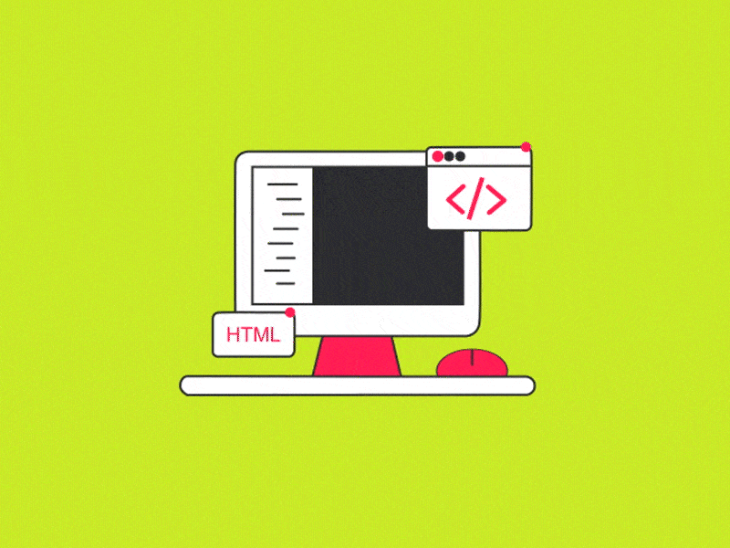

Что такое HTML?
Что такое HTML? Речь идет о языке разметки, который позволяет браузеру понимать, как следует отображать пользователю ту или иную информацию.
Изучив этот язык, можно заниматься веб-разработкой, а это достаточно востребованная и хорошо оплачиваемая специальность.

HyperText Markup Language – язык гипертекстовой разметки. Это набор команд, следуя которым, браузеры выводят на монитор различные документы и странички сайтов. Покажем на примере, что такое язык разметки HTML:
Здесь мы видим разные символы и слова, которые вписаны внутри угловых скобок (<_h1>, <_p> и др.). Их называют тегами. Здесь стоит объяснить, что такое теги в HTML. Это указания браузеру, как следует отображать текстовые фрагменты, где расположить картинку, кнопу и т.д.
Картинка из гугла, с добавлением рамок итд

GIF из гугла, с добавлением рамок итд
Картинка из гугла, с добавлением ссылки итд
Картинка из гугла, с добавлением рамок итд
Картинка из гугла, с добавлением рамок итд
Картинка из гугла, с добавлением рамок итд
| Критерий | C# | Java |
|---|---|---|
| Разработчик | Microsoft | Oracle |
| Среда исполнения | .NET Core / Framework | JVM (Java Virtual Machine) |
| Основная ОС | Windows, Linux, macOS | Кроссплатформенность |
| Сборка мусора | Автоматическая (GC) | |
| Типизация | Строгая статическая | Строгая статическая |
| Использование | Игры (Unity), Web, Windows | Android, Backend, Enterprise |
| Источник: Официальная документация языков | ||